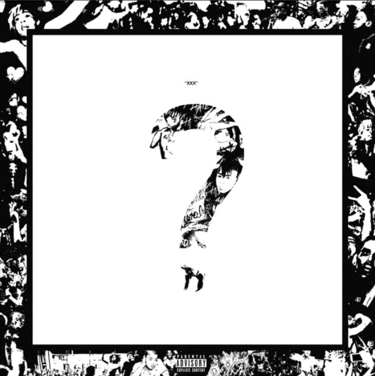
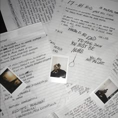
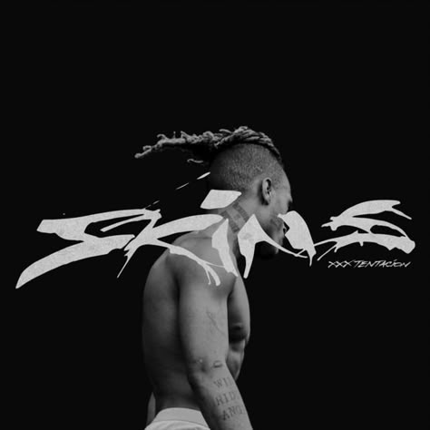

Álbuns mais famosos
-

? (2018) – O Mais Popular
📅 Lançamento: 16 de março de 2018
🔥 Principais músicas:
"SAD!" (hit #1 na Billboard)
"Moonlight"
"Changes"
📌 Motivo do sucesso:
Seu álbum mais ouvido e diversificado, misturando rap, rock e R&B. -

17 (2017) – O Mais Emocional
📅 Lançamento: 25 de agosto de 2017
🔥 Principais músicas:
"Jocelyn Flores"
"Fuck Love" (feat. Trippie Redd)
"Save Me"
📌 Motivo do sucesso:
Letras profundas e som melancólico, abordando depressão e dor emocional. -

Skins (2018) – O Primeiro Póstumo
📅 Lançamento: 7 de dezembro de 2018
🔥 Principais músicas:
"BAD!"
"Train food"
"One Minute" (feat. Kanye West)
📌 Motivo do sucesso:
Primeiro álbum lançado após sua morte, trazendo faixas inacabadas e experimentais. -

Bad Vibes Forever (2019) – O Último Álbum
📅 Lançamento: 6 de dezembro de 2019
🔥 Principais músicas:
"Bad Vibes Forever" (feat. Trippie Redd & PnB Rock)
"UGLY"
"School Shooters" (feat. Lil Wayne)
📌 Motivo do sucesso:
Último álbum lançado, com várias colaborações e um som mais diversificado. -

Members Only, Vol. 4 (2019) – O Coletivo
📅 Lançamento: 23 de janeiro de 2019
🔥 Principais músicas:
"Sauce!"
"Make Eem Run! (feat. Bass Santana & Ski Mask The Slump God)"
"Gassed Up!"
📌 Motivo do sucesso:
Última colaboração com o grupo Members Only, lançado após sua morte.